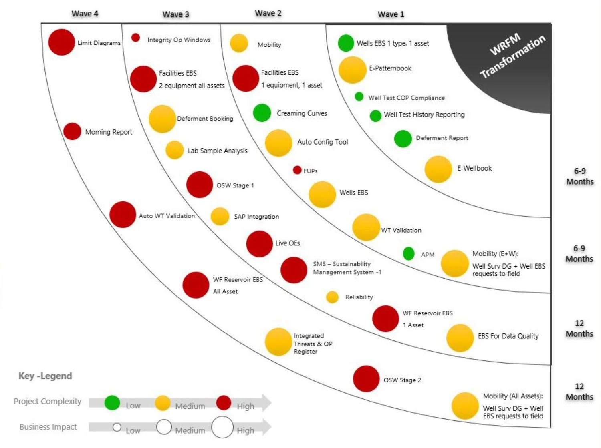
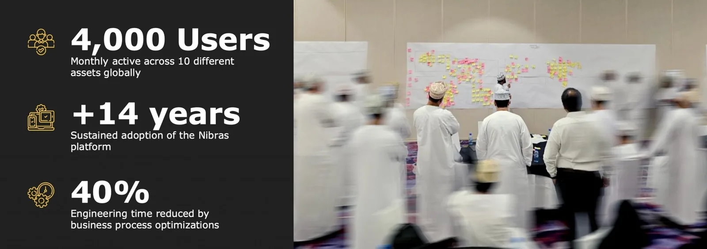
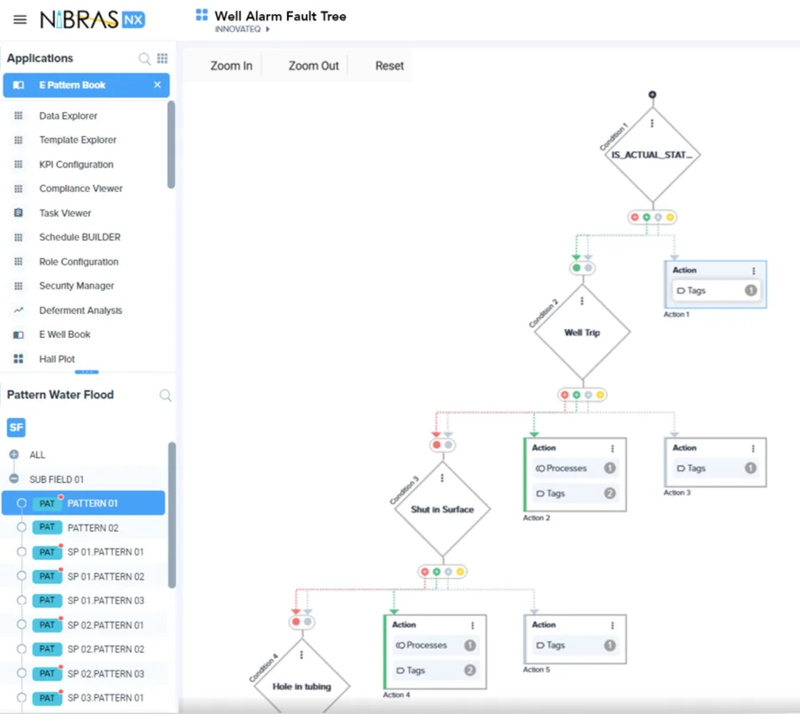
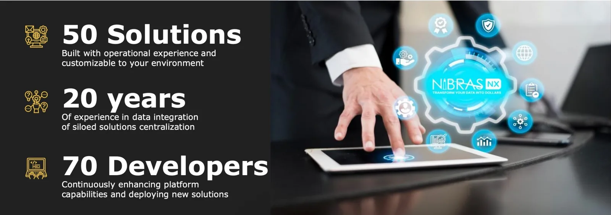
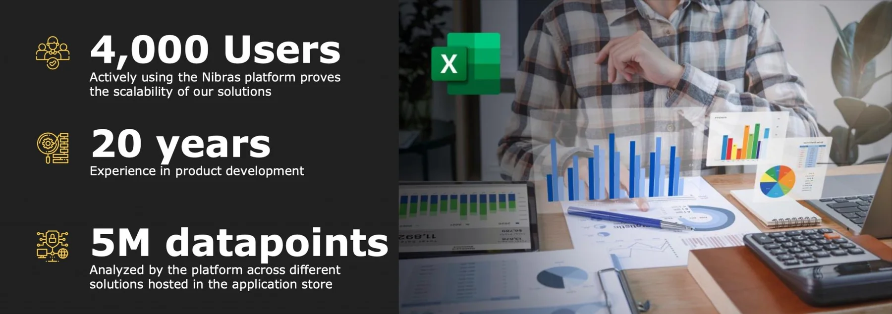

Our Services
Three services, in order: build the roadmap, deploy against it, and turn the work into IP your team owns.
Business Transformation
Unparalleled Sustained Adoption Rates
Business Transformation Services helps to organize high-value but siloed initiatives into a digital roadmap in line with your business strategy. The visibility created throughout the organization will provide corporate support to the initiatives to deploy standardized business processes across different assets, measure compliance and build a culture of continuous improvement. This change management approach results in long term sustained adoption rates proven with several of our clients.


Typical Challenges
- Local initiatives without corporate support
- Prioritization not always aligned with highest strategic value
- Staff rotation kills value adding local initiatives
- Different assets using different tools and KPI's
- Successes not replicated to other assets
- Different approaches to KPI calculations
Key Activities
- Strategy alignment with Dx Roadmap
- Corporate alignment workshop
- Cross organizational interviews
- Roadmap development and validation
- Business Process Standardization
- Business process gap analysis
- Best practice alignment across different assets/teams
- Setup Service Level Agreements (SLA)
- Document the business process
- Sustainability Management
- KPI development
- Management training for process compliance improvement
- Gemba walk training
- Continuous Improvement Culture
- Governance framework to approve, track and support corporate improvements
- Deployment support training to enable Build-Operate-Transfer (BOT) Approach
Deliverables
- 5-years Digital Roadmap enabling your corporate strategy
- Standard Operating Procedures (SOP's) for your business processes
- KPI and Compliance Dashboards design
- Continuous Improvement Register
- Platform configuration tool training
- Cross departmental alignment
Deployment Services
Build, Operate and Transfer to your support organization to continuously adapt to your future
Deployment Services are intended to efficiently deploy all digital solutions in the Dx roadmap on the Nibras‑NX platform using low‑code deployment tools. Experts focus on business logic while commodity tasks such as labor-intensive data mapping is institutionalized in your support organization. By gradually transferring the ownership of the deployment to your organization, we ensure the continuous improvement culture is supported and we allow you to achieve your local content requirements.


Typical Corporate Challenges
- 70% of the time is spent on mapping data
- Different tools use different data sources for the same information
- Solutions cannot be customized to your needs
- Performance issues when scaling
- Tool is not embedded in your work process
- Experts needed to deploy solutions
Key Activities
a. Business Process Standardisation (Business Transformation Services)
- Best practice alignment across different assets
- Standardised business processes
- Requirements documentation Digital Process Deployment
- Data mapping to data sources
- Advisory services for data warehousing
- Process configuration
- Dashboard configuration
- Custom development
b. Acceptance Testing
- Classroom training
- Factory acceptance testing per solution
- Site acceptance for each asset replication
- Prioritized feature register for continuous improvement
c. Intensive Support
- Daily "clinic" sessions for immediate support
- On the desk training for personalised issues
d. Transfer to Support
- Training for support staff
- Regular governance boards for continuous enhancements
Deliverables
- Platform deployment with basic infrastructure requirements (User/Role Access, data access, process compliance, etc.)
- Functional requirements documentation for solutions
- Digital solutions deployed on Nibras NX platform
- Platform and solution training
- Low code support tools
- User manual and project documentation
Productization Services

Productization Services has a selection of different service models to expand your in-house development team that develops your Intellectual Property. Combining your subject matter experts with our professional software development services can turn unaccounted high maintenance costs associated to technical debt, software quality or scalability issues into an IP that is ever green, cost neutral or even profitable depending on the working model that is acceptable to your organization.
| Category | 3rd Party Tool Deployment | Resource Augmentation | Fixed Price Scope | Managed Services | Co-Development |
|---|---|---|---|---|---|
| Fit for Purpose tool | |||||
| Ever-Green Technology | |||||
| Agile Development | |||||
| Software Quality Assurance | |||||
| Platform Scalability | |||||
| Cost Control |
This is what gets deployed.
Four solution domains on the Nibras-NX platform.